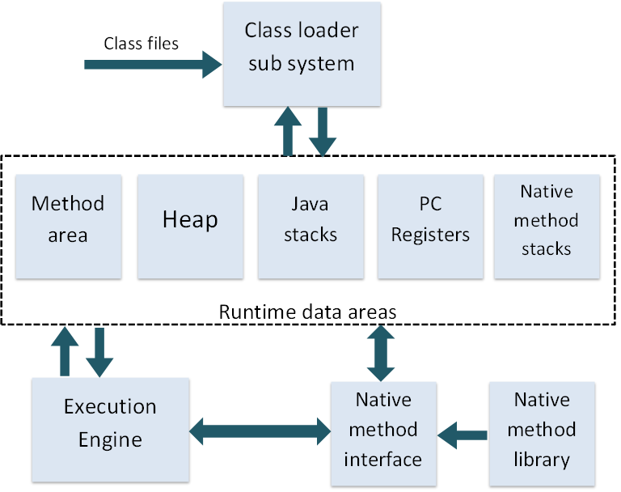

2. JVM¶
JVM은 어떤 환경에서든 자바 프로그램을 동작시킬 수 있도록 플랫폼 독립적으로 구현된 가상머신이다. JVM은 The Java Virtual Machine Specification 을 준수하며 JVM 스펙을 기반으로 누구나 JVM를 개발할 수 있다. 자바 프로그램 은 중간언어인 Java bytecode 로 구성되어 있다. 일반적으로 JDK에 포함된 JVM은 HotSpot VM이라고 불린다.
2.1. Open JDK 라이센스¶
Sun은 Java를 대중에 알리고 오픈소스의 힘을 얻기위해 Open JDK라는 이름으로 소스코드를 공개하였다. 이때 적용된 라이센스는 GPLv2 이었다. 하지만 GPL의 특성상 Class를 사용한 소프트웨어를 모두 공개해야 하므로 개발자들이 꺼릴 수 밖에 없었다. 따라서 classpath 라는 예외 조항을 두었다고 한다.
하지만 Java ME에는 이 조항이 적용되지 않았고 라이센스로 Sun은 이득을 챙겼다고 한다.
구글은 Dalvik VM이라는 기존의 JVM스펙을 따르지 않는 가상머신과 전혀 다른 Bytecode를 사용하였다. Java의 개발환경을 사용하였지만 결과적으로 독자적인 툴을 이용해 Dalvik 바이트코드를 사용한 것이다. Dalvik은 레지스터 기반 명령어 머신이다.
2.2. Java bytecode¶
자바의 중간언어가 Java bytecode라 불리는 이유는 OpCode가 1바이트를 차지하기 때문이다. 최대 256가지의 명령을 가지고 있다. Java bytescode를 분석하는 툴로 javap 라는 프로그램이 있다.
2.3. JVM 구조¶
JVM 스펙 을 확인할 것을 추천한다.
클래스 로더는 JVM의 데이터 영역(Runtime Data Areas)로 클래스 파일을 로드한다. 실행 엔진(Execution Engine)이 프로그램을 실행시키는 구조를 갖는다.
클래스 로더 는 런타임에 클래스를 로드하고 옳바른 Bytecode인지 확인한다.
런타임 데이터 영역(Run-Time Data Areas)은 PC Register, JVM Stacks, Native Method Stacks, Method Area, Heap 으로 구성된다. 그리고 그림에는 없는 Runtime Constant Pool(상수 영역) 이라는 것도 존재한다.
JVM Stacks(Java Virtual Mathine Stacks) 은 Java 메서드의 스택프레임을 저장하는 역할을 한다. 지역변수, 매개변수, 피연산자 스택, 상수영역에 대한 포인터로 이루어 진다. 피연산자 스택은 일시적인 변수 저장을 목적으로 레지스터가 사용되듯이 명령어의 작업을 위해 할당된 영역이다.
PC Register 는 다음 실행할 명령어의 주소를 저장하는 레지스터이다. 스레드마다 하나씩 존재한다.
Native Method Stacks JNI를 통해 다른언어로 쓰여진 함수를 위한 스택이다.
Method Area 는 클래스와 인터페이스에 필요한 상수들의 레퍼런스(Runtime Constant Pool)와 필드와 메서드의 정보, static 객체, String literal pool, 메서드와 생성자의 바이트코드를 포함하고 있다. 모든 스레드에 의해 공유되는 공간이다. 가끔 톰캣에서 마주치는 PermGen(Permanent Generation)이라는 영역이 바로 메서드 영역이다.
런타임 상수 풀(Run-time Constant Pool) 은 Method Area에 소속되어 있으며 상수 값을 포함하고 있다. 또한 메서드와 멤버변수의 위치를 찾기 위해 필요한 상수 값들을 심볼 테이블에 저장하고 있다. 따라서 메서드나 필드를 참조할때 반드시 런타임 상수 풀에 접근하여야 한다.
Heap 은 인스턴스를 저장하는 공간이다. 주로 Garbage Collector가 활동하는 공간이다.
실행 엔진(Execution Engine) 은 런타임 데이터 영역의 실행코드를 해석하고 실행한다. 실행 엔진은 인터프리터와 JIT(Just-In-Time) 으로 구성된다. JVM 인터프리터라고 불리는 이유는 바로 실행시간에 자바 바이트코드를 기계어로 해석하기 때문이다. JIT는 자주 사용되는 코드나 메서드를 기계어로 번역해놓는다. 실행 엔진은 JIT가 변환한 기계어를 통해 빠르게 프로그램을 실행 시킬 수 있다.
Native method interface 는 네이티브 메소드를 실행하기위해 네이티브 라이브러리와 연결하는 역할을 하는 인터페이스이다.
2.4. JVM 튜닝¶
몇몇 가지 중요한 옵션은 아래와 같다.
- -Xmx: 최대 힙 사이즈이다.
- -Xms: 시작 힙 사이즈이다.
- -Xss: 스레드 스택 크기이다.
- -XX:NewRatio: New generation 공간의 비율을 정할 수 있다. heap x (1 / (1 + ratio)) 만큼을 New에 할당한다.
- -XX:NewSize: 초기 New generation 공간의 크기이다.
- -XX:MaxNewSize: New generation 공간의 최대 크기이다.
NewRatio는 애플리케이션의 속성에 따라 적절하게 튜닝되어야 한다.
- 오래 살아남는 객체가 많을 경우, NewRatio를 키워서 Old generation 공간의 크기를 늘려야한다. 이는 상대적으로 Major GC를 줄일 수 있다.
- 짧게만 사는 객체가 많을 경우 NewRatio의 크기를 줄이는 것이 좋고, 이는 결국 Major GC를 줄일 수 있다.
- 일반적으로 NewRatio는 2~3을 사용한다.
2.5. 가비지 컬렉션(Garbage Collection)¶
가비지 컬렉션이란 더이상 참조되지 않는 객체의 메모리를 해제하는 것을 뜻한다. Eden Space가 꽉차거나 활당 비율이 높을때는 Minor GC, Old Space가 가득차면 Full GC가 발생한다.
가비지 컬렉션 과정
- 어떤 종류의 GC이든 stop-the-world를 발생시킨다. (JVM을 멈춘다. 아무런 동작을 할 수 없다)
- 참조 되지않는 객체를 찾는다.
- 객체의 메모리를 회수한다. 생존한 객체들은 Young 영역 또는 Old 영역에 맞는 방식으로 처리한다. (Young 영역에서는 Survivor영역으로 이동시키거나 Old 영역으로 이동시킨다.)
유의할 점
- 프로그래머가 System.gc()를 호출하는 코드를 작성하면 시스템의 성능을 저하시키므로 반드시 지양해야한다.
2.5.1. 가비지 컬렉션 원리¶
weak generational hypothesis 를 기반으로 구현되었다. 이 이론은 두가지를 가정하고 있다.
- 대부분의 객체는 금방 접근 불가능(unreachable) 상태가 된다.
- 오래된 객체에서 젋은 객체로의 참조는 아주 적게 존재한다.
위 가설을 기반으로 HotSpot VM에서는 Heap을 두가지 영역으로 나누었다.
- Young Space (Young Generation Space) : 새로운 객체들이 위치하게 된다. 대부분의 객체들이 금세 접근 불가능(unreachable) 상태가 되므로 많은 수의 객체들이 생성되었다가 사라진다. (Minor GC)
- Old Space (Old Generation Space) : Young Generation영역 에서 오래 살아남은 객체들이 이동하는 영역이다. Young Generation 영역보다 크기가 크며 여기서 객체들이 정리되면 Major GC(Full GC)가 일어났다고 한다.
- Permanent Space (Permanent Generation Space) : 메서드 영역(Method Area)을 부르는 말이다. 클래스 변수(static 변수)가 존재한다. 이곳에서 GC가 발생하면 Minor GC라고 한다.
2.5.2. Young 영역 (Young Space)¶
Young 영역은 새로운 객체들이 저장되는 곳이며 저장된 대부분의 객체가 금세 접근 불가능 상태로 바뀌는 영역이다. Young 영역은 에덴(Eden), 2개의 생존(Survivor)으로 나눠진다. 에덴 영역과 생존 영역에서 가비지 컬렉션이 일어나며 오래된 객체는 Old Space로 보낸다.
새로운 객체는 에덴 영역 에 위치하게된다.
- 에덴 영역에 첫번째 GC가 발생하고 살아남은 객체를 생존 영역으로 이동시킨다.
- 에덴 영역에 계속 GC가 발생하고 하나의 생존 영역이 꽉 찰때까지 수행한다.
- 생존 영역이 꽉 차면 살아남은 객체만 2번째 생존영역으로 이동시킨다.
- 2번째 생존영역에 객체를 쌓게되고 이때도 꽉차게 되면 살아남은 객체를 다른 생존 영역으로 이동시킨다.
- 이 과정에서 Survivor에서 오래 살아남은 객체(여러번의 GC동안 살아남은 객체)는 Old 영역으로 이동시킨다.
2.5.3. Old 영역 (Old Space)¶
Old 영역이 가득차게되면 GC가 발생한다.(Major GC or Full GC) 알고리즘 종류에는 Serial GC, Parallel GC, Parallel Old GC, CMS GC, G1 GC등이 있다. 서비스에 사용되는 WAS의 스레드 개수와 인스턴스 개수에 따라 알고리즘을 선택해는것이 좋다.
2.6. 스레드 개수의 한계¶
사용가능한 스레드의 최대 개수는 시스템 설정과 메모리의 크기와 연관이 있다. 일반적으로 스레드는 OS 스레드와 일대일로 매핑되며 스레드별 스택을 보유하고 있다. 즉 OS 스레드 생성 개수에 제한이 있을 경우 생성이 안될 수 있다.
중요한 부분은 스레드가 스택을 사용한다는 것이다. Java6 (Windows, Linux) 기준 32비트 JVM에서는 320K , 64비트 JVM에서는 1M 만큼의 스택을 생성한다. 즉, 4GB 메모리를 사용할 때 64비트 JVM에서는 4000개, 32비트 JVM에서는 약 8000개의 스레드를 생성할 수 있다. 최대 스레드를 확인하는 예제 이다.
자바 서버 프로그래밍을 한다면 스레드 대신 SocketServerChannel를 활용하여 커넥션을 다루는 것이 더 효율적이다. SocketServerChannel 관련 예제 이다.